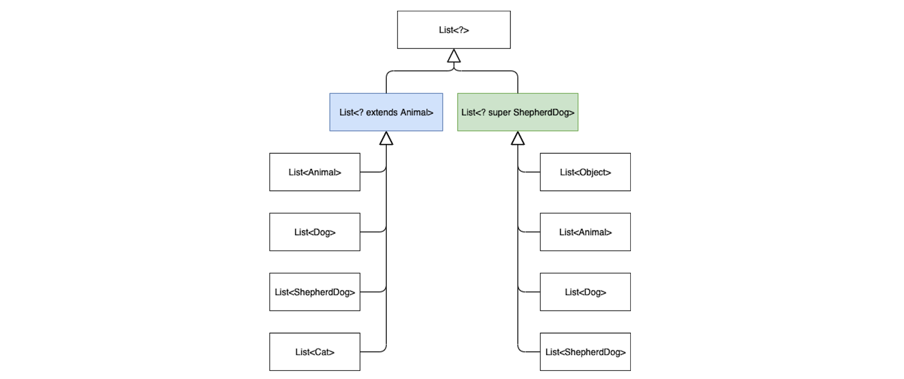

4. 泛型
概念类似数学中的泛函数，泛型类是以类型为参数的类型：编译期约束运行时擦除。旨在类型安全的代码复用：
- 类型参数：声明类/函数时对其内部数据类型的参数化，侧重于声明处的代码复用
- 类型通配符：使用的对象的类型的通用化(但又支持编译期检查)，侧重于实例使用处的代码复用
注：类型参数是占位符，当泛型类被使用时它将被擦除(.class文件中实际用的是Object/显式指明的上限类型)。
// 默认的上限时Any?，若有多个上限可使用where子语句
class MyClass<T>(var t: T)
where T : CharSequence, T : Comparable<T> {
}
// 泛型函数 上限为Number
fun <T : Number> MyClass<T>.update(t: T) {
this.value = t
}
4.1 Java型变支持
Java的泛型是不型变的，但支持在使用侧借助类型通配符完成协变和逆变。
类型通配符
? extends T指定类型参数的上限，该类型(?)必须是类型T或者它的子类型? super T指定类型参数的下限，该类型(?)必须是类型T或者它的父类型?无界通配符，代表任意未知类型
以 Cat -|> Animal 表示class Cat: Animal、ShepherdDog -|> Dog -|> Animal：

注：
List<Cat>和List<Animal>不存在父子类型关系，即泛型是不型变的。List<? extends Animal>只能Get不能Put，因为不知道容器内元素的具体类型List<? super ShepherdDog>只能Put不能Get，因为Get出的元素无法引用(也不知道具体类型)List<?>能Get出Object元素，只能Put进null
协变
Convariant：若 C -|> F 时有 f(C) -|> f(F) 则f叫做协变，其中f(F)形如List<F>。
Java的数组是协变的，即Number[] arr = new Integer[10]; 但这样的协变并不安全：
Object[] os = new Integer[10];
os[0] = ""; // error: ArrayStoreException
Java通过? extends上限通配符来实现协变：
Integer -|> ? extends Number 且有 List<Integer> -|> List<? extends Number>
List<? extends Number> nList = new ArrayList<Integer>(Arrays.asList(1, 2, 3));
Number n = nList.get(0); // 可以取出Number
nList.add(null); // 只能写入null
// nList.add(4); // error
逆协变
Contravariant：若 C -|> F 时有 f(F) -|> f(C) 则f叫做逆变, 其中f(C)指List<C>
Java通过? super下限通配符来实现逆变：
? super Integer -|> Number 且有 List<Number> -|> List<? super Integer>
List<? super Integer> nList = new ArrayList<Number>(Arrays.asList(1, 2, 3));
Object obj = nList.get(0); // 只能取Object
nList.add(4); // 可以写入Integer
注：
- 若协变和逆变关系都不成立，则叫做不型变。
- PECS(producer-extends, consumer-super)即Get and Put Principle，用法参见
Collections.copy()
// Collections
public static <T> void copy(List<? super T> dest, List<? extends T> src) {
int srcSize = src.size();
if (srcSize < 10 || src instanceof RandomAccess && dest instanceof RandomAccess) {
for (int i = 0; i < srcSize; ++i) dest.set(i, src.get(i));
} else {
ListIterator<? super T> di = dest.listIterator(); // in T
ListIterator<? extends T> si = src.listIterator(); // out T
for (int i = 0; i < srcSize; ++i) {
di.next();
di.set(si.next());
}
}
}
4.2 Kotlin型变支持
使用处型变
Kotlin舍弃了类型通配符，在使用侧型变是用out/in修饰带来的类型投影(通过移除类的某些方法来限制使用)完成：
- 只读(类似
? extends T)：Array<out T>只保证取出数据的类型安全，即只能调返回T的方法，集合对象是生产者 - 只写(类似
? super T)：Array<in T>只保证写入数据的类型安全，即只能调传入T的方法，集合对象是消费者 - 原生无界通配(对应
?)：Array<*>只能取出Any?，只能写入Nothing
public class Array<T> {}
fun copy(dist: Array<in Int>, src: Array<out Number>) {
// in T: 对于dist只能调用传入T的方法，投影移除了返回T的方法
// out T: 对于src只能调用返回T的方法，投影移除了传入T的方法
for (i in src.indices) {
dist[i] = src[i].toInt()
}
}
fun main(args: Array<String>) {
val nArr: Array<Number> = arrayOf(1)
val iArr: Array<Int> = arrayOf(1)
copy(nArr, iArr)
copy(iArr, nArr)
}
声明处型变
对于类型中只存在某一类方法（只返回T，或只传入T），可以在泛型声明时添加协变修饰，此后该泛型类为支持型变的类型。
- 只有返回T的方法（生产者，用
out T），支持协变是类型安全的 - 只有传入T的方法（消费者，用
in T），支持逆变是类型安全的
// 声明支持协变
interface List<out E> : Collection<E> {}
// 声明支持逆变
interface Comparable<in T> {}
val list: List<Number> = listOf<BigInteger>() // 协变
val numCmp = object : Comparable<Number> {
override fun compareTo(other: Number): Int {
return 0
}
}
val cmp: Comparable<Double> = numCmp // 逆变
类型投影
在不感知类型参数的情况下，可使用星投影语法<*>声明一个泛型类的类型投影：改投影类型可以接受目标泛型类的任意实例（类似Java<?>），但读写时有限制：
- 对于泛型
Foo<out T : TUpper>，投影类型Foo<*>等价于Foo<out TUpper>：当T未知时，可以安全地从Foo <*>读取TUpper值。 - 对于泛型
Foo<in T>，投影类型Foo<*>等价于Foo<in Nothing>：当T未知时，不能安全地向Foo <*>写入任何值。 - 对于泛型
Foo<T: TUpper>:- 读取值时投影类型
Foo<*>等价于Foo<out TUpper>。 - 写入值时投影类型
Foo<*>等价于Foo<in Nothing>。
- 读取值时投影类型
注：
- 如果泛型类有多个类型参数，每个类型参数都可以单独投影；
- 对比Kotlin类型投影
List<*>和Java无界限通配符List<?>：- 读取：Kotlin星投影语法可取出
类型上限，Java无界通配符只能取出Object。 - 写入：Kotlin星投影语法不能写入(
in Nothing)，Java无界通配符只能写入null。
- 读取：Kotlin星投影语法可取出
class Test<in T, out U : CharSequence, V : Number>(
private var t: T,
val u: U,
var v: V
) {
fun setT(arg: T) {
t = arg
}
}
fun main(args: Array<String>) {
val t: Test<*, *, *> = Test<Any?, String, Int>(null, "", 0)
// t.setT(Nothing); // Test<in Nothing>
val chs: CharSequence = t.u // Test<out CharSequence>
val obj: Number = t.v // Test<in Nothing> Test<out Number>
// t.v = 0 // ERROR: Setter for 'v' is removed by type projection
}